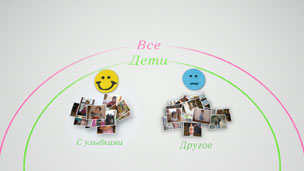
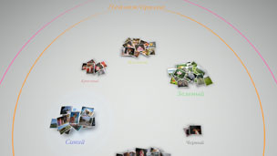

Организация фотографий
Группировка фотографий
Можно выбрать события и затем сгруппировать фотографии, относящиеся к этим событиям, по признакам, описанным ниже. Выберите события, содержащие фото, которые вы хотите сгруппировать, нажмите кнопку  , затем выберите вариант (Группировать). Чтобы сгруппировать фотографии внутри группы по другому признаку, выберите группу или группы, содержащие эти фотографии, в затем используйте другую функцию раздела (Группировать).
, затем выберите вариант (Группировать). Чтобы сгруппировать фотографии внутри группы по другому признаку, выберите группу или группы, содержащие эти фотографии, в затем используйте другую функцию раздела (Группировать).
| Дата / время | Фотографии будут сгруппированы по времени съемки. |
|---|---|
| Количество людей | Фотографии будут сгруппированы по количеству людей на них. |
| Возрастная группа | Фотографии будут сгруппированы по возрасту людей на них. |
| Выражение | Фотографии будут сгруппированы по выражению лиц сфотографированных людей. |
| Цвет | Фотографии будут сгруппированы по цвету или цветам, представленным на снимках. |
| Тип камеры | Фотографии будут сгруппированы по модели фотоаппарата, которым были сделаны снимки. |
| Игра | Фотографии будут сгруппированы по названию игры. |
| Альбом | Фотографии будут сгруппированы по альбомам, созданным в разделе  (Фото) на экране XMB™. (Фото) на экране XMB™. |
Подсказки
- При выборе варианта [Выбрать все] все фото на экране [Область библиотеки] будут сгруппированы по указанным признакам.
- Группы создаются на основе анализа фотографий и в некоторых случаях результат может получиться не таким, как вы ожидали.
- Можно создать список воспроизведения сгруппированных фотографий.
Примеры группировки фотографий: фотографии улыбающихся детей
1. |
Сгруппируйте фотографии, выбрав (Группировать) > [Возрастная группа]. |
|---|---|
2. |
Выберите группу с названием [Дети], затем нажмите кнопку |
3. |
Выберите (Группировать) > [Выражение].  |
Примеры группировки фотографий: фотографии ясного неба
1. |
Сгруппируйте фотографии, выбрав (Группировать) > [Количество людей]. |
|---|---|
2. |
Выберите группу с названием [Пейзаж/другое], затем нажмите кнопку |
3. |
Выберите (Группировать) > [Цвет].  |
Удаление фотографий
Для удаления отдельной фотографии или целого альбома нажмите кнопку и выберите  (Удалить).
(Удалить).
Подсказка
При удалении фотографий на экране [Область библиотеки] они будут также удалены с системного накопителя вашей системы PS3™.